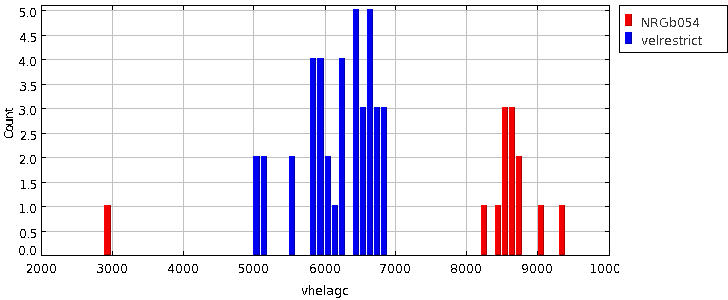
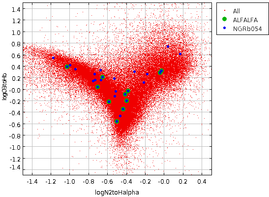

NRGb054
RA,Dec RA,Dec(deg) R(2Mpc) nz nopt cz sig logsig sig logLx dist*
NRGb054 0941167+113316 145.3196 11.55444 1.2 5 13 6460 145 2.52 0.12 <41.80 0.00 97
At this distance, 2 Mpc = 1.2 degrees.
So box should be: RA > 144.12 & RA < 146.52
Dec > 10.35 & Dec < 12.75
(This selects N = 95 galaxies)
Using agcnorthminus1.csv within that region, a histogram of velocities shows that the cluster is reasonably separated in velocity space:
First, examine the velocity distribution:

The cluster at ~6000 km/s is well-separated in velocity space from other structure.
I split off a new subset between 4500 and 7500 km/s. (N = 40 galaxies both in spatial and velocity range)
The literature value of cz is 6460 +/- 145 km/s
This is not so close to the TOPCAT 5733 +/- 1705 km/s...
Using a57+agc+nsa.v012.mags+lines.appmags+faceHalpha.csv, the RA/Dec/Velocity slice
selects N = 11 galaxies, all code 1s and 2s.
+--------+-----------+----------+------+-----+-------+------+-------+
| AGCnr | radeg_1 | decdeg_1 | v21 | W50 | sintp | sn | icode |
+--------+-----------+----------+------+-----+-------+------+-------+
| 190426 | 144.97374 | 11.03722 | 6706 | 232 | 2.17 | 14.8 | 1 |
| 192149 | 145.24709 | 11.67139 | 6654 | 80 | 0.93 | 10.7 | 1 |
| 192025 | 145.25500 | 10.945 | 5526 | 99 | 1.50 | 14.9 | 1 |
| 190440 | 145.38083 | 10.64139 | 5594 | 147 | 0.79 | 6.1 | 1 |
| 192217 | 145.39833 | 12.19917 | 6696 | 183 | 0.84 | 5.4 | 2 |
| 192152 | 145.44209 | 11.88917 | 6893 | 53 | 1.22 | 17.1 | 1 |
| 5177 | 145.47459 | 11.63167 | 5045 | 242 | 5.52 | 34.4 | 1 |
| 192219 | 145.57541 | 12.21667 | 6844 | 162 | 0.70 | 5.4 | 2 |
| 190454 | 145.72708 | 12.38639 | 5857 | 303 | 0.92 | 4.0 | 2 |
| 192161 | 146.01334 | 11.06389 | 6443 | 109 | 0.67 | 7.1 | 1 |
| 190470 | 146.09792 | 11.23139 | 5086 | 103 | 3.85 | 34.2 | 1 |
+--------+-----------+----------+------+-----+-------+------+-------+
Using agc+nsa.v012.mags+lines.appmags+faceHalpha.csv, the RA/Dec/Velocity slice:
RA > 144.12 & RA < 146.52
Dec > 10.35 & Dec < 12.75
vel > 4500 & vel < 9500
selects N = 28 galaxies
+--------+-----------+----------+--------+------------+---------------------+--------------------+----------------------+-----------------------+
| AGCnr | radeg | decdeg | NSAID | ABSMAG_i | g-i | vhelio | logN2toHalpha | logO3toHb |
+--------+-----------+----------+--------+------------+---------------------+--------------------+----------------------+-----------------------+
| 193971 | 144.89291 | 11.49472 | 73969 | -16.414465 | 0.3114449999999991 | 5956.239275552 | -0.9954387995299491 | 0.4063635244711108 |
| 190426 | 144.97374 | 11.03722 | 73971 | -19.423435 | 0.7891709999999996 | 6720.441461087999 | -0.5045846325532533 | -0.570779438511405 | ** ALFALFA
| 192147 | 145.02333 | 12.00444 | 73980 | -17.948383 | 0.7513310000000004 | 6564.3934294559995 | -0.5144342309379497 | -0.048723840700496374 |
| 191863 | 145.15834 | 10.585 | 51919 | -17.459713 | 0.5816289999999995 | 6060.410699919999 | -0.7323396518972354 | 0.1484207236584286 |
| 192149 | 145.24709 | 11.67139 | 73964 | -17.6322 | 0.30984300000000076 | 6670.224802128 | -1.0265172223159367 | 0.382340419964532 | ** ALFALFA
| 192150 | 145.24918 | 12.03056 | 73984 | -17.471195 | 0.5640560000000008 | 6789.328266432 | -0.7534025453034252 | 0.12963269602566285 |
| 192025 | 145.255 | 10.945 | 73965 | -17.97168 | 1.040582999999998 | 5551.40435584 | -0.43317743745755716 | -0.3524021219708866 | ** ALFALFA
| 5171 | 145.31917 | 10.64667 | 73968 | -21.308582 | 1.106498000000002 | 5788.459483584001 | -0.3158424774225788 | 0.2949614117399158 |
| 190439 | 145.33292 | 11.21889 | 73958 | -20.27499 | 1.168499999999998 | 6292.530052176 | -0.21629757109183212 | 0.10995502936565642 |
| 190440 | 145.38083 | 10.64139 | 51920 | -19.326712 | 1.036093000000001 | 5544.552909472 | -0.02733184859507512 | 0.3122275613767919 | ** ALFALFA
| 192217 | 145.39833 | 12.19917 | 73991 | -18.366077 | 0.6293010000000017 | 6630.539836128 | -0.4141228054687125 | -0.09955052547708548 | ** ALFALFA
| 193975 | 145.41292 | 11.47444 | 73952 | -17.754673 | 0.7837959999999988 | 6455.40314848 | -0.675543458054129 | 0.3209096358069599 |
| 192152 | 145.44209 | 11.88917 | 73993 | -19.046165 | 0.6056449999999991 | 6825.55333296 | -0.384221368588596 | -0.040366985749992396 | ** ALFALFA
| 190444 | 145.44499 | 11.48222 | 73954 | -5.3285065 | -14.599449499999999 | 6396.570467439999 | -0.6669911858886938 | 0.15098626882034602 |
| 192153 | 145.45 | 11.67361 | 73994 | -16.705772 | 0.8873859999999993 | 6489.648988223999 | -0.522773996390207 | -0.13605264140743825 |
| 190732 | 145.46208 | 12.18361 | 73990 | -19.665152 | 0.4040169999999996 | 6831.6675908 | -0.46764186942914976 | -0.47394415780358157 |
| 5177 | 145.47459 | 11.63167 | 73953 | -19.22228 | 0.5517479999999999 | 5093.186374064 | -0.7061109554649142 | 0.028086277468496786 | ** ALFALFA
| 193976 | 145.47459 | 11.65444 | 73955 | -16.80804 | 0.08981799999999751 | 5139.899963504 | -1.175512371624867 | 0.5381670371460814 |
| 5178 | 145.48708 | 12.29583 | 157380 | -21.490253 | 1.2133210000000005 | 6748.899216688001 | 0.040952885358934495 | 0.7305705775762267 |
| 192154 | 145.57291 | 11.30917 | 73946 | -16.605925 | 0.4737669999999987 | 6276.760992976 | -0.940741041051934 | 0.33934780989774693 |
| 192219 | 145.57541 | 12.21667 | 73992 | -18.400906 | 0.5794409999999992 | 6841.90698656 | -0.5880066724664131 | -0.22981640601925102 | ** ALFALFA
| 190454 | 145.72708 | 12.38639 | 73983 | -20.63263 | 1.1388250000000006 | 5804.106227648001 | -0.04261015426651667 | 0.2809161826202382 | ** ALFALFA
| 192157 | 145.76416 | 11.07944 | 73940 | -16.871838 | 0.5685849999999988 | 5993.280076112 | -0.7371996514479461 | 0.24975458648137477 |
| 5200 | 145.91832 | 11.06028 | 157407 | -21.126556 | 1.222253000000002 | 6161.560820512 | -0.5311804739980117 | 0.17988577430878563 |
| 190468 | 146.01001 | 10.98806 | 73930 | -20.800909 | 1.1228160000000003 | 6078.721995280001 | 0.17095366050934777 | 0.6028887723651197 |
| 192161 | 146.01334 | 11.06389 | 73932 | -18.602688 | 0.5862079999999992 | 6450.45358256 | -0.6553570763806928 | 0.19808813385006363 | ** ALFALFA
| 192162 | 146.03543 | 11.25417 | 73941 | -18.75821 | 1.2830499999999994 | 5169.811110719999 | -0.18182145654663545 | 0.2570099555058157 |
| 190470 | 146.09792 | 11.23139 | 73942 | -19.643585 | 0.7751809999999999 | 5072.084314975999 | -0.39817267136657225 | -0.20748043500893698 | ** ALFALFA
+--------+-----------+----------+--------+------------+---------------------+--------------------+----------------------+-----------------------+
Now construct the BPT diagram:

There remain N = 11 galaxies on the star-forming sequence without an ALFALFA detection:
+--------+-----------+----------+--------+------------+---------------------+--------------------+----------------------+-----------------------+
| AGCnr | radeg | decdeg | NSAID | ABSMAG_i | g-i | vhelio | logN2toHalpha | logO3toHb |
+--------+-----------+----------+--------+------------+---------------------+--------------------+----------------------+-----------------------+
| 193971 | 144.89291 | 11.49472 | 73969 | -16.414465 | 0.3114449999999991 | 5956.239275552 | -0.9954387995299491 | 0.4063635244711108 |
| 191863 | 145.15834 | 10.585 | 51919 | -17.459713 | 0.5816289999999995 | 6060.410699919999 | -0.7323396518972354 | 0.1484207236584286 |
| 192150 | 145.24918 | 12.03056 | 73984 | -17.471195 | 0.5640560000000008 | 6789.328266432 | -0.7534025453034252 | 0.12963269602566285 |
| 193975 | 145.41292 | 11.47444 | 73952 | -17.754673 | 0.7837959999999988 | 6455.40314848 | -0.675543458054129 | 0.3209096358069599 |
| 192153 | 145.45 | 11.67361 | 73994 | -16.705772 | 0.8873859999999993 | 6489.648988223999 | -0.522773996390207 | -0.13605264140743825 |
| 190732 | 145.46208 | 12.18361 | 73990 | -19.665152 | 0.4040169999999996 | 6831.6675908 | -0.46764186942914976 | -0.47394415780358157 |
| 193976 | 145.47459 | 11.65444 | 73955 | -16.80804 | 0.08981799999999751 | 5139.899963504 | -1.175512371624867 | 0.5381670371460814 |
| 192154 | 145.57291 | 11.30917 | 73946 | -16.605925 | 0.4737669999999987 | 6276.760992976 | -0.940741041051934 | 0.33934780989774693 |
| 192157 | 145.76416 | 11.07944 | 73940 | -16.871838 | 0.5685849999999988 | 5993.280076112 | -0.7371996514479461 | 0.24975458648137477 |
** These two show SDSS absorption**
| 190444 | 145.44499 | 11.48222 | 73954 | -5.3285065 | -14.599449499999999 | 6396.570467439999 | -0.6669911858886938 | 0.15098626882034602 | **Note faulty M_i
| 5200 | 145.91832 | 11.06028 | 157407 | -21.126556 | 1.222253000000002 | 6161.560820512 | -0.5311804739980117 | 0.17988577430878563 |
+--------+-----------+----------+--------+------------+---------------------+--------------------+----------------------+-----------------------+
That makes 9 galaxies.
Best references for each cluster
| Cluster/group | References |
|---|---|
| NRGb 054 |